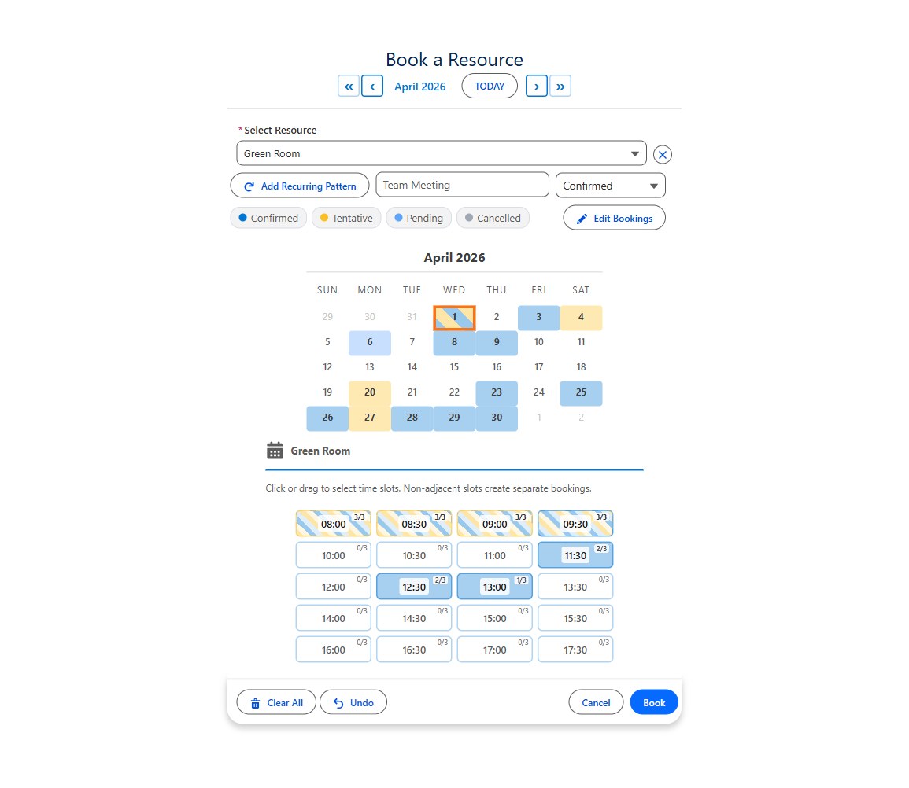
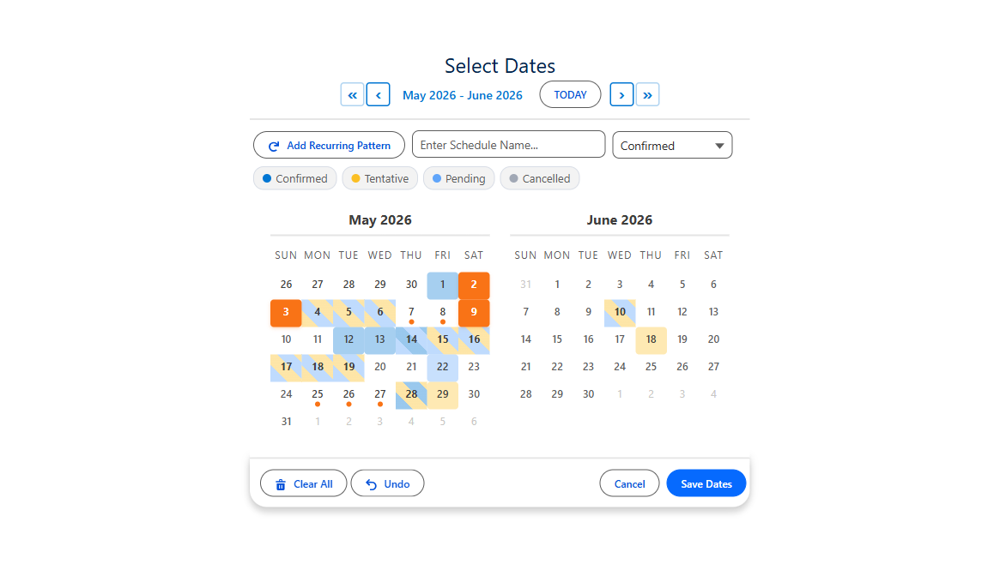
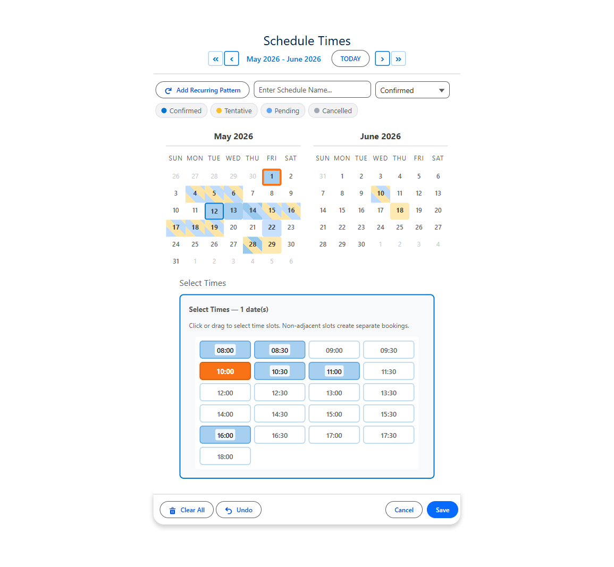
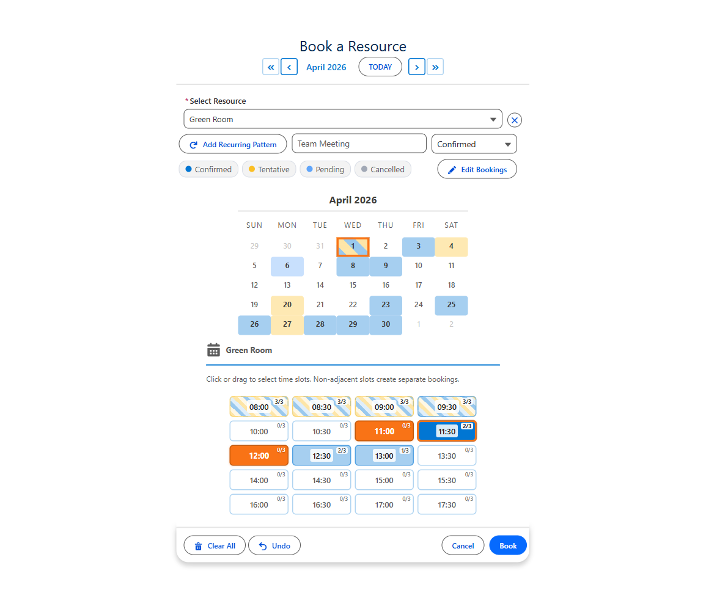

MultiDatePick
Select More. Do More.
The most customizable calendar component on the Salesforce AppExchange. Pick dates, schedule times, book resources with capacity tracking, color-code statuses, consolidate date ranges, and manage bookings — all from a single, configurable package with 60+ properties. No code required.

Three Components. One Package. Infinite Possibilities.
Pick one date or many. Assign times with precision. Book resources without conflicts. Track statuses with color-coded calendars. Consolidate adjacent dates into ranges. Edit and manage existing records inline. All click-configured and ready for Flows, Record Pages, App Pages, Home Pages, and Experience Sites.
Select More. Do More.

Date
Select Multiple Dates
Click individual dates, drag-select ranges, or add recurring patterns with custom intervals. Color-code dates by status. Consolidate adjacent dates into start/end date ranges. Edit and delete existing date records inline.
Explore Use Cases →
Date Time
Dates and Times, Together
Combine multi-date selection with a visual time slot grid or dropdown pickers. Track statuses with color-coded slots. Edit existing records to change dates, times, or status values inline. Group time slots by morning, afternoon, and evening.
Explore Use Cases →
Booking
Book Resources Across Dates
Reserve rooms, equipment, vehicles, or people with a visual time-slot grid. Capacity mode supports multiple bookings per slot with live availability badges. Edit, reassign, or delete bookings inline with real-time conflict detection.
Explore Use Cases →The Most Customizable Calendar on the AppExchange
Other calendar components give you a date picker. MultiDatePick gives you a platform. With 60+ configurable properties, every aspect of the calendar, time grid, and booking experience is yours to control — without writing a single line of code.
Edit Mode
Select existing records on the calendar, then change their status, move them to a new date, update times, reassign to a different resource, or delete them — all inline without leaving the page.
Status Colors
Map any picklist value to a custom color. Calendar dates show pastel fills, time slots show colored stripes, and the whole interface becomes a visual dashboard of what's Confirmed, Pending, Cancelled, or any custom status.
Capacity Booking
Allow multiple bookings per time slot with live capacity badges. Perfect for training rooms, class enrollments, hot-desk pools, or any resource where more than one person can book the same slot.
Date Range Consolidation
Selecting Mon through Fri creates one record with a start date and end date — not five separate records. Configure an End Date Field and adjacent dates are automatically consolidated into ranges.
Setup Wizard
A guided step-by-step wizard walks admins through configuring any component. Choose a component type, map your objects and fields, set display options, and deploy — all without reading docs.
Recurring Patterns
Select every weekday, every other Monday, the 1st and 3rd Friday, or the last Saturday of each month. Custom week intervals and monthly occurrence filters turn a 50-click task into two clicks.
Every property works in Flows, Record Pages, App Pages, Home Pages, and Experience Sites. Configure once, use everywhere.
Explore the ComponentsWorks Everywhere in Salesforce
MultiDatePick isn't limited to one surface. Every component works on all major Salesforce page types — configure once and deploy wherever your users need it.
Screen Flows
Drag any component into a Flow Builder screen element. Selected dates output to Flow variables as a text collection or JSON — ready for loops, decisions, and record creation.
Lightning Record Pages
Place on any record page in App Builder. The component auto-detects the current record and saves selected dates as related child records. Enable Edit Mode to manage existing records inline.
App Pages
Build standalone scheduling pages using Lightning App Pages. Use the staticRecordId property to link to a specific parent record — no record context needed.
Home Pages
Add booking or scheduling components to your Home Page so users see their calendar the moment they log in. Pair with staticRecordId for a centralized booking dashboard.
Experience Sites (Communities)
Expose scheduling to external users on Experience Cloud sites. Customers, partners, or vendors can book resources and select dates through your community portal.
Named Configurations
Use the configName property to load settings from a Custom Metadata record. One config, many pages — change settings in one place and every instance updates automatically.
What Can You Build with MultiDatePick?
From simple date selection to complex multi-resource booking, here are real-world use cases across all three components. Each component page has 10-15 detailed use cases with configuration tips.
Date — Date Selection
PTO & Vacation Requests
Employees select their time-off dates on a calendar. Adjacent dates are automatically consolidated into date ranges — selecting Mon through Fri creates one record with a start and end date. Status colors show Pending, Approved, and Denied at a glance.
Travel Date Selection
Employees select their travel dates in a Screen Flow, then auto-generate per-diem records, travel detail line items, or expense entries for each selected day. Use endDateField to consolidate multi-day trips into single records.
On-Call Rotation
Managers assign on-call dates using recurring patterns with week intervals — set every other Monday for the next quarter in two clicks. Status colors distinguish Primary, Backup, and Swapped shifts.
Event Attendance
Attendees RSVP to event dates on a calendar. Each date creates one RSVP record linked to the attendee. Status colors show Registered, Waitlisted, and Cancelled responses. Preloaded dates prevent duplicate registrations.
Date Time — Date + Time Scheduling
Interview Scheduling
Recruiters schedule interviews by selecting dates and choosing 30-minute time slots from a per-date grid. Each date gets its own grid, allowing different interview times on different days. Status colors track Scheduled, Completed, No Show, and Cancelled.
Maintenance Scheduling
Schedule recurring maintenance visits with specific time windows. Use the time slot grid to assign 1-hour service windows per day. Conflict detection prevents overlapping appointments on the same equipment.
Appointment Booking
Clients pick appointment dates and times from a visual grid or dropdown pickers. The component checks for conflicts with existing appointments and auto-generates records with date, start time, and end time fields populated.
Shift Scheduling
Managers assign employee shifts across multiple days. Pick dates, set start/end times per shift, and auto-generate shift records. Group time slots by period (Morning, Afternoon, Evening) for quick selection.
Booking — Resource Booking
Conference Room Booking
Reserve conference rooms across multiple dates and time slots. The booking grid shows real-time room availability. Business hours are pulled from each room record so different rooms can have different available hours.
Training Enrollment
Employees enroll in training sessions by selecting a course, choosing dates, and picking time slots. Capacity tracking shows how many seats remain per session. Status colors distinguish Enrolled, Waitlisted, and Cancelled registrations.
Desk Hoteling
Employees reserve hot desks by selecting a desk resource and choosing dates with time blocks. Capacity badges show desk availability at a glance. Two-month view helps employees plan hybrid schedules weeks in advance.
Vehicle & Fleet Reservation
Reserve company vehicles for specific dates and time ranges. The booking grid shows which vehicles are available. Multiple-resource mode lets users compare availability across the entire fleet at once.
Each component page has 10-15 detailed use cases with configuration tips.
Import Pre-Built Configurations in 3 Steps
Download a JSON configuration template from this website and import it into your org using the Setup Wizard. No CLI, no code, no metadata deployment — just paste and go.
1 Download a Configuration
Browse the use cases on each component page and click the Download JSON Config button. The file contains all the property settings for that use case — object mappings, display options, status colors, and more.
2 Open the Setup Wizard
In your Salesforce org, open the MultiDatePick Setup component (add it to any Lightning page via App Builder). Navigate to the Existing Configurations tab, then click the Import / Export section.
3 Paste & Import
Give your config a name, paste the JSON into the text area, and click Import. The wizard deploys the configuration as a Custom Metadata record. Then just set configName on any component to load those settings instantly.
Why MultiDatePick?
No Code Required
Drag the component onto any page or drop it into a Screen Flow. Configure everything with point-and-click properties — no Apex, no LWC development, no custom JavaScript. Or use the Setup Wizard and skip the property panel entirely.
Edit Mode — Manage Records Inline
Don't just create records — manage them. Enter Edit Mode to change statuses, move bookings to new dates, update times, reassign resources, or delete records with a two-click confirmation. All three components support inline editing.
Status Colors & Visual Tracking
Map any status picklist to custom colors with statusColors. Calendar dates show pastel fills, time slots show colored stripes, and you can hide cancelled records from the grid entirely with hideBookingsWithStatus.
Capacity Booking
Go beyond one-booking-per-slot. Set a capacityField on your resource and the component handles the rest — live badges show "3/10" fill counts, slots stay available until full, and stripe patterns show the status mix.
Date Range Consolidation
Configure an endDateField and adjacent selected dates are automatically merged into single records with start and end dates. Selecting Monday through Friday creates one record, not five.
Recurring Patterns with Smart Intervals
Select every weekday, every other Monday, the 1st and 3rd Friday of each month, or the last Saturday — in two clicks. Week intervals and monthly occurrence filters (1st, 2nd, 3rd, 4th, Last) make rotation scheduling effortless.
7 Languages Built In
English, Spanish, French, German, Hindi, Japanese, and Portuguese — all built in. The component matches the user's Salesforce language automatically. Every label, button, tooltip, and message is translated.
60+ Configurable Properties
Calendar size, two-month view, day headers, week start, time intervals, business hours, conflict behavior, blocked dates, status colors, hover fields, capacity, edit display, record naming, and dozens more — all point-and-click.
Frequently Asked Questions
recordId is auto-injected — the component works exactly like a Lightning Record Page. On generic pages (App Pages, Home Pages, community home pages), there is no automatic record context. For those surfaces, the recommended approach is to use a Screen Flow instead of the Lightning Record Page save mode. The Flow handles record creation with full control over context — no hardcoded IDs needed. If you need a quick setup tied to one specific record, you can use the staticRecordId property.
multiDatePickSetup) is a guided configuration component. It walks admins through choosing a component type, mapping objects and fields, setting display options, and deploying the configuration as a Custom Metadata record. Any component instance can then load that configuration by setting one property: configName. The wizard also supports cloning, exporting, and importing configurations as JSON — making it easy to share configs between orgs or download pre-built templates.
statusField property to the API name of any picklist or text field, then set statusColors with a comma-separated mapping like Confirmed:green,Pending:orange,Cancelled:red. You can use color names (green, blue, orange, red, gray) or hex codes. Use hideBookingsWithStatus to completely hide records with a specific status (like Cancelled) from both the grid and capacity counts.
enableEditMode property and an Edit Bookings button appears on the calendar. Click it to open the bulk edit panel: pick dates to load their records, then change status, move to a new date, update times, reassign a resource, or delete — all in one Apply Changes click. The capacity-aware conflict check blocks moves that won't fit in the new time range, and deletion uses a two-click confirm to prevent accidents.
capacityField property pointing to a number field on your resource object (e.g., Max_Seats__c = 10). The time grid shows live badges like "3/10" and slots stay available until capacity is reached. Status stripes show the mix of Confirmed, Pending, and other statuses across all bookings in each slot. Set showAvailabilityCount to ON to display the badges.
endDateField property, the component automatically groups adjacent selected dates into single records with a start date and end date. For example, if a user selects Monday through Friday, instead of creating five separate records, the component creates one record with Date__c = Monday and End_Date__c = Friday. Non-adjacent dates still get their own records. This works on all three components.
minDate, maxDate, block specific dates from a source object (like holidays), restrict to future-only dates with allowPastDates, limit the maximum number of selections with maxSelections, or provide an explicit list of availableDates where everything else is disabled. Use autoJumpToFirstAvailable to open the calendar to the month of the first available date.
String[] array of ISO dates (e.g., ["2026-03-10", "2026-03-11"]) and optionally a JSON string with consecutive dates grouped into ranges. The DateTime component adds start/end times to each entry. The Booking component outputs a success count and any conflict dates. All components can also auto-save records directly to your configured object.
bookingConflictDates. In capacity mode, slots remain available until the configured capacity limit is reached. Use conflictBehavior to control whether conflicts block selection or just warn the user.
hoverFields property to specify which fields appear in the tooltip when users hover over a booked slot or calendar date. Pass a comma-separated list of field API names (e.g., Name,Status__c,Start_Time__c) and the component displays them in the hover card.
Use a Lightning Record Page when the component should live directly on a record (Account, Contact, custom object) and auto-save selected dates as related child records. This requires no Flow at all — just configure the Related Object, Date Field, and Relationship Field properties in App Builder and the component handles saves automatically.
recordId automatically — it works exactly like a Lightning Record Page with no extra setup. On generic community pages (home page, custom pages), there is no record context. The recommended approach is to embed the component inside a Screen Flow, which handles record creation with full flexibility. Add the Flow to your Experience Site page using the standard Flow component. This approach works on App Pages and Home Pages too.